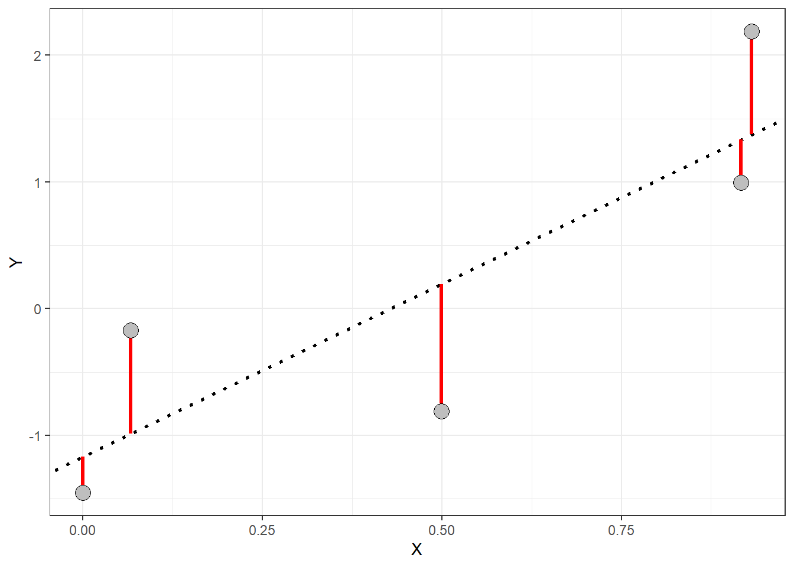
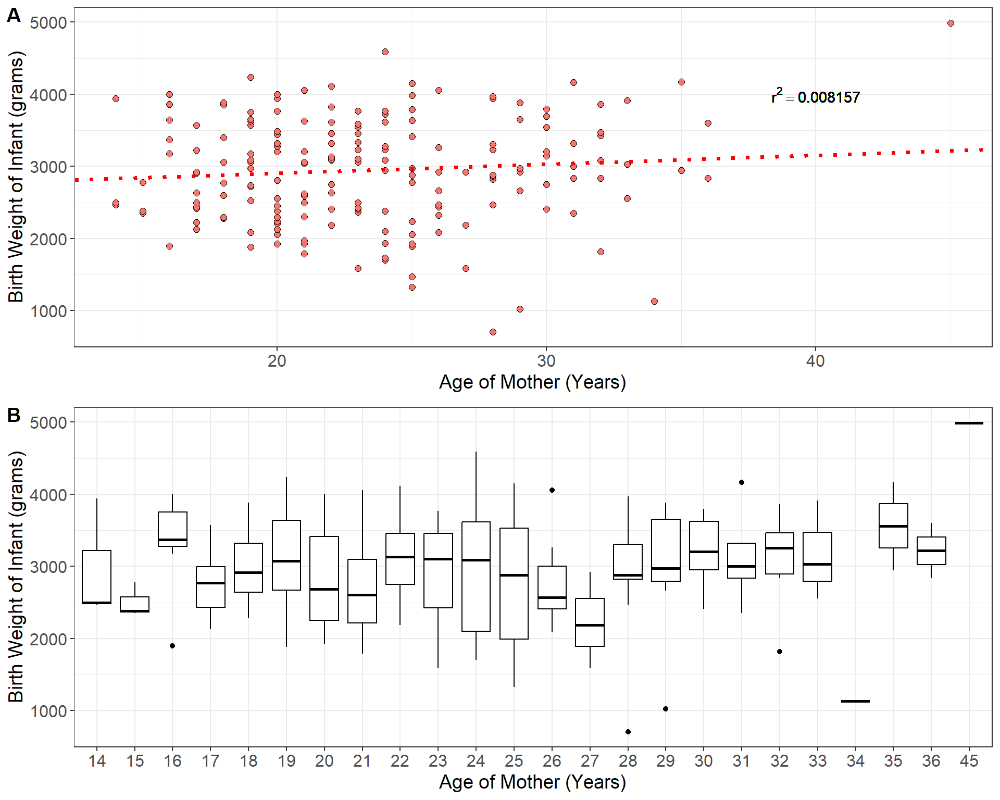

Week 15 Notes
STAT 251 Section 03
Lecture 29 Monday, April 22nd 2024
In many studies, the goal is to show that changes in one or more explanatory variables actually cause changes in a response variable. The statistical techniques we will describe this week will require us to distinguish between explanatory and response variables. You will often see explanatory variables called the independent variable and response variables called the dependent variable. The idea behind this language is that the response variable depends on the outcomes of the explanatory variable (if they share a statistical relationship).
Scatterplots and statistical associations
A scatterplot is a type of descriptive plot that shows the relationship between two quantitative variables (denoted \(X\) and \(Y\)) measured on the same individual usually. The horizontal axis is called the \(x\)-axis and the vertical axis is called the \(y\)-axis. Typically the independent or explanatory variable is represented on the \(x\)-axis and the response variable is represented on the \(y\)-axis. Consider the four scatterplots below which plot the relationship between the independent variable \(X\) and the dependent variable \(Y\):
Six plots depicting scatterplots between two variables \(X\) and \(Y\)
- Which of these plots indicate a statistical association between the two variables and which do not?
How do you interpret a scatterplot?
look for an overall patterns of the points in each plot
You can describe the overall pattern in three terms: form, direction and strength
form: do the points form a line, a curve, or a cloud? if the points follow roughly a straight line we say that they are linear in form, and if the points follow a curve we would say that they are non-linear in form.
direction: which direction do the points trend as you move left to right across the values of the explanatory variable
strength: if there is a pattern, are the points loose and spread out? or are they tightly packed together?
In general, we say that two variables are positively associated when larger values of the explanatory variable are paired with larger values of the response variable. Conversely, we say that two variables are negatively associated if larger values of the explanatory variable are paired with smaller values of the response.
It may also be important to note of the points form specific clusters as this may indicate a hidden grouping in the data that is not accounted for by the independent variable. When a scatterplot shows distinct clusters it often most useful to describe the pattern in each cluster.
Measures of association
As we just saw, scatterplots display the form, direction, and strength of the relationship between two quantitative variables. Linear (straight-line) relationships are often of interest because they occur most often. If the points in a scatterplot lie close to a straight line we say that they have a strong linear relationship. However, scatterplots can be misleading when trying to judge the strength of a linear relationship. Consider the two plots below which show the relationship between highway fuel efficiency (in miles per gallon) and weight of cars from the classic 1993 New Car dataset (Lock 1993; Venables and Ripley 2002).
- Which plot shows a stronger linear relationship?
This was a rhetorical question since both plots depict the same data. However, the plot on the right spans a larger range on both the \(x\) and \(y\) axes. This example demonstrates that the way data is plotted can mislead our perception of the strength of a linear relationship, showing that humans are not always reliable judges in this regard. Therefore, we need to follow our general strategy of following up any graphical display with a numerical measure to help us interpret what we see.
In general when employing numerical measures of association our data generally constitute measurements on two quantitative variables \(X\) and \(Y\) measured on \(n\) individuals
\[ X = \{x_1, x_2, x_3, \cdots x_n\} \]
\[ Y = \{y_1, y_2, y_3, \cdots y_n\} \]
Each pair of \(x\) and \(y\) values \((x_i, y_i)\) constitutes a point in a scatterplot of these two variables so that there are \(n\) total points in the plot. One measure of association between two variables is called covariance. Recall that the sample variance is a numerical measure of the spread of a variable and gives the average size of the squared deviation from the mean. Covariance is the joint variability between two variables \(X\) and \(Y\) defined as
\[Cov(X,Y) = \sum_i \frac{(x_i-\bar{x})(y_i - \bar{y})}{n-1}\]
In general, if two variables share a strong positive or strong negative relationship, they will have a large positive or large negative covariance, and if two variables are independent their covariance should be close to zero. Consider the first three scatterplots and the covariances between \(X\) and \(Y\) from figure 1 seen earlier
As we can see from above the plots that show a stronger linear relationship are paired with larger covariances for \(X\) and \(Y\). However, you may have noticed that covariance depends on the units of \(X\) and \(Y\). This makes covariance hard to interpret because one or both of the variables exists on a large scale the covariance will naturally take on large values. Consider the scatterplot below which shows the relationship and covariance between median house value and population for 30 districts in California from 1990 (Géron 2022)
| Population of District | Median Home Value |
|---|---|
| 870 | 416700 |
| 648 | 155500 |
| 1660 | 127100 |
| 715 | 71500 |
| 1161 | 161500 |
| 2461 | 160800 |
| 1124 | 98600 |
| 1182 | 172300 |
| 1289 | 229500 |
| 20 | 112500 |
| 742 | 88200 |
| 1498 | 125700 |
| 2156 | 353800 |
| 6652 | 278300 |
| 848 | 158200 |
| 1488 | 313600 |
| 423 | 136300 |
| 1047 | 271300 |
| 1312 | 218000 |
| 1250 | 206200 |
| 28 | 162500 |
| 520 | 95000 |
| 676 | 135500 |
| 1217 | 156300 |
| 1039 | 151600 |
| 1001 | 134400 |
| 232 | 500001 |
| 776 | 173500 |
| 1468 | 434000 |
| 742 | 43000 |
Even though the plot doesn’t really show a strong relationship between these two variables the covariance we compute is a whopping 26,390,423. Moreover, because our two variables have different units, the units of the covariance we computed are nonsensical. Since covariance is not straight-forward to interpret, it is not typically used to measure the strength of a linear relationship. Instead, a similar measure called correlation is the statistical the measure that is most often used to determine the strength of two quantitative variables. We can think of correlation as a type of standardized, unitless covariance. Essentially, correlation is a scaled form of covariance that allows for clearer interpretation of the relationship between two quantitative variables. Correlation is defined as
For each individual there is a height \(x_i\) and a weight \(y_i\). Correlation is defined as
\[r_{x,y} = \frac{1}{n-1}\sum_i \left(\frac{x_i - \bar{x}}{s_x}\right) \left(\frac{y_i - \bar{y}}{s_y}\right) = \frac{Cov(X,Y)}{\sqrt{s_x^2s_y^2}}\]
The symbol \(r_{x,y}\) is used to denote the sample correlation between variables \(X\) and \(Y\). From the formula above, we can see that the correlation coefficient \(r_{x,y}\) is the covariance of \(X\) and \(Y\) standardized by the individual standard deviations for each variable. The result is that the \(r\) has no units and represents the average of the products of the standardized \(X\) and \(Y\) values across all \(n\) observations. This gives the correlation coefficient several nice proporties:
it ranges in value from \(-1\) to \(+1\). Values close to \(-1\) indicate strong negative associations and values close to \(+1\) indicate strong positive associations.
A correlation coefficient of exactly positive or negative one indicate a perfect linear relationship
values at or close to zero indicate little or no association between the variables.
Unlike covariance, the value of the sample correlation will NOT change when the units of one or more of the variables are changed. This is because we standardize the deviations to have no units.
Its important to note that correlation can only be used to measure the strength of linear relationships between two variables. It cannot accurately described non-linear (curved) relationships. It is also not a resistant measure. Outliers will have a signficant affect on the value of the correaltion coefficient
In the earlier example comparing population to median home value, the correlation coefficient between these two variables is \(r \approx 0.2\). Now consider the first three plots from figure 1 but this time with correlations plotted for each scatterplot

Computing the covariance or correlation is not an easy task. The formulas are quite involved and infeasible for any large number of observations. Thus it is best to rely on software to easily compute correlations. However, we can get a feel of the mechanics of correlation by computing it for a small number of observations. Try the example below
Try it out: Consider the following dataset which is the height and weight for six adults
| Index | Height (inches) | Weight (pounds) |
|---|---|---|
| individual 1 | 69.8 | 140.9 |
| individual 2 | 69.8 | 129 |
| individual 3 | 65.4 | 123.2 |
| Sample Mean | 68.3 | 131 |
| Sample SD | 2.54 | 9.02 |
Let us start by computing the sample covariance for height and weight
\[Cov(\text{Height},\text{Weight}) = \frac{(69.8 - 68.3)(140.9 - 131)}{3-1}+\frac{(69.8 - 68.3)(129 - 131)}{3-1}+\frac{(65.4 - 68.3)(123.2 - 131)}{3-1} \] \[ \approx 16.86\]
The correlation is given by
\[ r = \frac{16.86}{\sqrt{2.54^2\cdot 9.02^2}} \approx 0.74\]
Introduction to simple linear regression
Correlation measures the strength of a linear relationship between two variables, but what if you want to go a step further and find the best-fit line that connects those dots? That’s where linear regression comes in. It’s a statistical technique that finds the straight line that best describes the relationship between two quantitative variables, often visualized on a scatterplot. The most basic version of this technique, where you fit a line to two quantitative variables, is called simple linear regression.
When a scatterplot shows a linear patter we can describe the overall linear relationship by drawing a line through the points. Of course any line that we draw will not touch all of the points. But we would like any line that we draw to come as close to all of the points as possible. A regression line of this sort gives a compact description of how a response variable \(y\) changes as an explanatory variable \(x\) changes.
It turns out that the line that comes as close as possible to all of the points is the line that minimizes the squared deviations of the residuals.

Residuals are the vertical distances (red lines in the plot above) between each point and the regression line. If you think of the regression line as our best guess at the relationship between \(X\) and \(Y\), then the residuals represent the error in that guess for each point. The line that “best” fits the data is the one with the smallest average residual—essentially, the one with the least error across all the points in the plot. This line gives us the best model to describe the relationship between the \(X\) and \(Y\) variables. You can take a look at https://www.geogebra.org/m/xC6zq7Zv to pratice fitting the “best” line.
Lecture 30 Wednesday, April 24nd 2024
The simple linear model
We learned on Monday that a scatterplot can be used to visualize and check for a linear relationship between two quantitative variables. We also learned that straight line fitted through the data points can be used to describe that trend. We will use the notation
\[ \hat{y}_i = \alpha + \beta x_i \]
to display this line mathematically, called the regression line. The equation above is often referred to as the prediction equation. The symbol \(\hat{y_i}\) represents the predicted value for the \(i^{th}\) observation of the dependent variable \(Y\) given the \(i^{th}\) value of the independent variable \(x_i\). The symbol \(\alpha\) is called the \(y\)-axis intercept and \(\beta\) is called the slope. The slope of a regression line relating \(X\) and \(Y\) describes how much \(\hat{y}\) changes per unit change in \(X\) (sometimes called rise over run). This is visualized in the plot below.
When the slope is negative the predicted values decrease as independent variable \(X\) increases
When the slope is positive the predicted values increase as the independent variable \(X\) increases
When the slope is zero (or near zero) the regression line is approximately horizontal.
The absolute value of the slope gives the magnitude change in \(Y\) per unit change of \(X\).
The slope is dependent on the units of \(X\). A 1-unit increase in \(X\) could be a trivial amount or it could be huge.
Finding a regression line and the least-squares estimator
On Monday, we also briefly introduced the idea of a residual - the disparity (error) between the values predicted by the regression line \(\hat{y}_i\) and the actual values of the response variable \(y_i\). We will use the symbol \(\epsilon_i\) (called epsilon) to represent the residual for the \(i^{th}\) observation of the response variable. We can write the observations of the response variable in terms of the predicted values and the residuals:
\[ y = \alpha + \beta x_i + \epsilon_i\]
where
\[ \epsilon_i = \hat{y}_i - y_i\]
Thus each observation of the response variable has a residual. Some of the residuals will be positive and some will be negative.
A positive residual indicates that the actual \(y_i\) is greater than predicted value \(\hat{y}_i\)
A negative residual indicates that the actual \(y_i\) is less than predicted value \(\hat{y}_i\)
The smaller the absolute value of the residual the closer the predicted value is to the actual value of the response variable
The length of the red line in the plot above represents the absolute value of the residual for observation \(y_i\). The residuals are all vertical distances because the regression equation predicts values of the response variable.
Recall that the line of “best” fit is the one that is simultaneously as close as possible to all data points. Such a line will have the smallest possible residuals. This process involves compromise as any line we draw can perfectly predict any one point but may gravely over/under predict other points resulting in larger residuals. The acutal summary measure used to evalute and fit a regression line is called the residuals sum of squares (denoted \(SS_E\))
\[ SS_E = \sum_i (\hat{y}_i - y)^2 \]
The measure above describes the variation in the residuals. The line which minimizes the residual sum of squares will have the smallest average residuals. Thus the better the line fits the data, the smaller the residuals will be and the the smaller the \(SS_E\) will be.
The regression line which minimizes the \(SS_E\) will have some positive and some negative residuals the mean of the residuals will be \(0\).
It will pass through the point \((\bar{x}, \bar{y})\). This means the line passes through the center of the data
Even though we will typically rely on software to compute a regression line, the least squares line gives explict formulas for the slope and intercept:
\[\hat{\beta} = r_{x,y} \left(\frac{s_y}{s_x}\right) \]
\[\hat{\alpha} = \bar{y} - \beta\bar{x}\]
Notice that the slope \(\beta\) is directly related to the correlation coefficient \(r\)
Predicting values of the dependent variable: Batting averages
A regression line allows us to further describe the relationship between two variables that goes beyond just stating the strength of the relationship using the correlation coefficient \(r_{X,Y}\). Consider the following data which gives observations of team batting average and average score for teams in the American League of baseball.
| Team | Team Batting Average | Average Runs Scored |
|---|---|---|
| NY Yankees | 0.27 | 5.30 |
| Boston | 0.27 | 5.05 |
| Tampa Bay | 0.25 | 4.95 |
| Texas | 0.28 | 4.86 |
| Minnesota | 0.27 | 4.82 |
| Toronto | 0.25 | 4.66 |
| Chicago Sox | 0.27 | 4.64 |
| Detroit | 0.27 | 4.64 |
| LA Angels | 0.25 | 4.20 |
| Kansas City | 0.27 | 4.17 |
| Oakland | 0.26 | 4.09 |
| Cleveland | 0.25 | 3.99 |
| Baltimore | 0.26 | 3.78 |
| Seattle | 0.24 | 3.17 |
The table below provides summarizes the data.
| Team Batting Average | Average Runs Scored | |
|---|---|---|
| Sample Standard Deviation | 0.013 | 0.577 |
| Sample Mean | 0.260 | 4.451 |
Now consider fitting a line to estimate the relationship between team batting average (indepdent variable) and average runs scored per game (dependent variable). The plot below gives the least-squares regression line relating these two variables. Based on the plot, is team batting average a good predictor of the average number of runs a team will score ?

Use the plot and the summary information to compute the estimates for the slope and intercept
Using the prediction equation, how many runs would expect a team with a batting average of \(0.25\) to score?
Is there a significant association between batting average and runs score? how can you tell?
Important Note on Regression Predictions: When applying a regression line to make predictions, it is crucial to avoid extrapolating beyond the range of values in the explanatory variable used to create the model. Extrapolation involves estimating outcomes for values of the predictor variable (\(X\)) that fall outside the range observed in the data. This practice is discouraged because the linear relationship between \(X\) and \(Y\) established by the model might not hold true beyond the observed data.
In other words, regression models are built to represent trends within the scope of the available data. Once you go beyond the minimum or maximum observed values of the explanatory variable, you enter a zone where the relationship between \(X\) and \(Y\) could be different. This uncertainty can lead to inaccurate or misleading predictions. Therefore, always ensure that predictions are made within the range of data used to fit the model to maintain reliability and accuracy.
Coefficient of determination \(r^2\)
When we predict a value of \(Y\), why should we use the regression line? We could instead use the center of \(Y\)’s distribution as our prediction for \(Y\) such as the sample mean \(\bar{y}\). One reason is that if the explanatory variable \(X\) and response \(Y\) have an approximate linear relationship then the prediction equation \(\hat{y}_i = \alpha + \beta x_i\) will give more accurate predictions than simply using the sample mean \(\bar{y}\). Consider again the example of teams in the American League for Major League Baseball
The red line gives the predictions using the sample mean and the blue line is the using the least squares regression line. In general, the stronger the stronger the linear relationship between the independent and dependent variables, the better the predictions with the regression line will become.
To judge how much better the predictions are for the regression model we can compare the residuals of the model fitting the regression line (blue line above) to the model fitting the sample mean (red line above).
The residuals for the model using the sample mean is given by
\[SS_T = \sum_i (y_i - \bar{y})^2 \]
called the total sum of squares or \(SS_T\) because it represents the total variation in the response variable. The residuals for the regression model are given by
\[ SS_E = \sum_i (\hat{y}_i - y_i)^2\]
The difference between the two is called the regression sum of squares or \(SS_R\)
\[ SS_R = SS_T - SS_E = \sum_i (\hat{y} - \bar{y})^2 \]
Notice that by rearranging the equation above, the total variation in the response can be partitioned in to two parts: the variation explained by the predictor (i.e \(SS_R\)) and the variation not explained by the predictor (i.e \(SS_E\)).
\[SS_{T} = SS_E+SS_R \]
By comparing the \(SS_T\) and \(SS_R\), we can determine how much the regression model improves our predictions over the model fitting the sample mean. This measure is called the coefficient of determination denoted \(r^2\) because it is the square of the correlation coefficient \(r\).
\[ r^2 = \frac{SS_R}{SS_T} = \frac{\sum_i (\hat{y} - \bar{y})^2}{\sum_i (y_i - \bar{y})^2} \]
The \(r\)-squared value is expressed as a percentage and tells us how much the overall variation in the response can be explained by the linear regression model. For the American League example we have a total sum of squares of
\[SS_T = 4.323\]
and a regression sum of squares of
\[ SS_R = 1.396 \]
which gives a coefficient of determination of
\[r^2 = \frac{1.396}{4.323} = 0.323 \ \ \text{or} \ \ 32.3\% \]
Thus team batting average explains roughly \(32\%\) of the variation in the average number of runs scored by teams in the American League of Major League Baseball.
Lecture 31 Friday, April 26th 2024
Regression relates the mean of \(Y\) to \(X\)
The prediction equation \(\hat{y}_i = \alpha + \beta x_i\) yields the predicted value the response \(Y\) for a given value of the independent variable \(X\). However, we don’t expect all observations of \(Y\) that depend on a given value of \(X\) to have the same value because naturally there is variation among individuals in the population. For example, consider the linear regression below which relates the age of \(189\) mothers in the U.S to the birth weight of their infants (Venables and Ripley 2002).
| Individual | Age of Mother (Years) | Infant Birth Weight (grams) |
|---|---|---|
| individual 1 | 19 | 2523 |
| individual 2 | 33 | 2551 |
| individual 3 | 20 | 2557 |
| individual 4 | 21 | 2594 |
| individual 5 | 18 | 2600 |
| \(\vdots\) | \(\vdots\) | \(\vdots\) |
| individual 189 | 21 | 2495 |

The prediction equation for the regression model fit to the birthweight data is given by
\[\hat{y} = 2655.7 + 12.43x_i\]
Now consider the predicted birth weight of an infant born to a mother of 21 years of age: \(\hat{y} = 2916.7\) grams. We do not expect all infants born to mothers of \(21\) years of age have the same weight of \(2916.7\) gams. One mother may have an infant born at \(3200\) grams and another at \(2500\) grams and so on. As we can see from panel \(\bf B\) in the plot above, for each possible age of the mother, there is a distribution of infant birth weights corresponding to all mothers of that age. Thus we can think of the predicted value \(\hat{y} = 2916.7\) as estimating the mean birth weight of all mothers aged \(x = 21\) years.
The population regression equation relates the predictor \(x\) to the means of \(Y\) in the population.
\[\mu_y = \alpha +\beta x \]
where \(\alpha\), and \(\beta\) are population parameters that are unknown. The quantity \(\mu_y\) is the population mean of \(y\) for a given value of \(x\).
Statistical inference for linear regression
A linear regression model:
specifies the linear relationship between two quantitative variables
uses a straight line to relate the means of \(Y\) across specific values of the predictor variable \(x\)
The population regression equation contains two population parameters \(\alpha\) the intercept and \(\beta\) the slope which are important for understanding the linear relationship between the predictor and outcome variables. We can conduct statistic inference on these two population parameters to place bounds on their values using confidence intervals or conduct hypothesis tests about specific values. However, as always, statistical inference comes with certain assumptions about the model which we will list below:
Statistical inference for the least-squares simple linear regression is based on the model
\[ y_i = \alpha +\beta x_i +\epsilon_i\]
the key assumptions of this model mostly concern the behavior of the residuals \(\epsilon_i\):
Linearity - the expected value (i.e average value) of the residuals is \(0\) for all values of \(x\): \(E[\epsilon_i|x] = 0\)
Constant Variance - the variance of the residuals is the same regardless of the value of the predictor \(x\): \(V[\epsilon_i | x_i] = \sigma_\epsilon^2\)
Normality - residuals are normally distributed: \(\epsilon_i \sim N(0, \sigma_\epsilon^2)\)
Independence - the observations are sampled independently: any pair of errors \((\epsilon_i, \epsilon_j)\) are independent
Fixed \(X\) - the values of the predictor \(X\) are fixed values or are measured without error and are independent of the residuals
\(X\) is not invariant - If the explanatory variable is fixed, then its values cannot all be the same. (i.e \(x\) cannot be constant)
Under these assumptions the population parameters \(\alpha\) and \(\beta\) are normally distributed. We are generally more concerned with the slope than the intercept. Therefore, the \((1 -a)\%\) confidence interval (\(a\) represents the confidence level) for the slope is given by
\[ \beta = \hat{\beta} \pm t_{1- a/2} SE(\hat{\beta})\]
In the equation above the critical value \(t_{1-a/2}\) follows a \(t\)-distribution with \(n-2\) degrees of freedom.
the standard error of the sample slope is given by
\[SE(\hat{\beta}) = \sqrt{\frac{s_\epsilon^2}{(n-1)s_x^2}} \]
\[= \sqrt{\frac{\frac{1}{n-2}\sum_i \hat{\epsilon_i}}{\sum_i (x_i - \bar{x})^2}} \]
A hypothesis test on the population slope \(\beta\) is usually conducted under the null hypothesis \(H_0: \beta = 0\) or “no linear relationship between \(X\) and \(Y\)”. The test is generally two-sided with alternative hypothesis \(H_A: \beta \neq 0\). The test statistic is the standardized estimate
\[t_0 = \frac{\beta - \hat{\beta}}{SE(\hat{\beta})} \sim t(n-2) \]
The calculations at this point are quite involved and it is best to rely on software to conduct inference on regression coefficients. Consider, again, the example of a regression model relating the age of mothers to the birth weight of their infants. The programming software \(R\) makes fitting linear models quite easy:
set.seed(123)
# The data come from the R-package MASS
data = MASS::birthwt
#fit a linear model using the "lm()" function: model = lm(y ~ x, data = dataframe)
model = lm(bwt ~ age, data = data)
print(model)##
## Call:
## lm(formula = bwt ~ age, data = data)
##
## Coefficients:
## (Intercept) age
## 2655.74 12.43#R has a function called summary which nicely displays all of the information:
summary(model)##
## Call:
## lm(formula = bwt ~ age, data = data)
##
## Residuals:
## Min 1Q Median 3Q Max
## -2294.78 -517.63 10.51 530.80 1774.92
##
## Coefficients:
## Estimate Std. Error t value Pr(>|t|)
## (Intercept) 2655.74 238.86 11.12 <2e-16 ***
## age 12.43 10.02 1.24 0.216
## ---
## Signif. codes: 0 '***' 0.001 '**' 0.01 '*' 0.05 '.' 0.1 ' ' 1
##
## Residual standard error: 728.2 on 187 degrees of freedom
## Multiple R-squared: 0.008157, Adjusted R-squared: 0.002853
## F-statistic: 1.538 on 1 and 187 DF, p-value: 0.2165In the output from \(R\) above, we see that the estimate of the slope is \(\hat{\beta} = 12.43\) with a standard error of \(SE(\hat{\beta}) = 10.02\). Recall from earlier that the data consist of \(189\) mothers and their infant birth weights. Using the estimate and standard error, we can easily construct a \(95\%\) confidence interval for the slope
\[ 12.43 \pm 1.97 (10.02) \approx \big[ -7.31, 32.17 \big]\]
Our confidence interval for the slope overlaps zero which indicates that there is not a strong linear relationship between age of the mother and infant birth weight. The output from above also gives the test statistic and \(p\)-value for the hypothesis tests on each coefficient under the null that their values are zero i.e \(H_0: \beta = 0\). The test statistic for the slope in our example is given by
\[ t_0 = \frac{12.43}{10.02} = 1.24\]
You can confirm the \(p\)-value is \(0.26\) using the \(t\)-table on the resources tab of the course website. As we can see from the \(R\) output, the hypothesis test also confirms that age of mother and infant birth weight are not significantly associated.
Monday April 29th 2024
An alternative way to test association
Consider the following dataset containing information about 1,143 social media ads from an anonymous company, detailing the number of times each ad was viewed and the total number of customers who made a purchase after viewing each ad (Mohammadi and Burke 2023).
| Index | Total Customers Purchasing Product | Number of Times Ad Shown |
|---|---|---|
| 1 | 1 | 7350 |
| 2 | 0 | 17861 |
| 3 | 0 | 693 |
| 4 | 0 | 4259 |
| 5 | 1 | 4133 |
| 6 | 1 | 1915 |
| 7 | 0 | 15615 |
| 8 | 1 | 10951 |
| 9 | 0 | 2355 |
| 10 | 0 | 9502 |
| \(\vdots\) | \(\vdots\) | \(\vdots\) |
| 1142 | 2 | 790253 |
| 1143 | 2 | 513161 |
Let’s consider a linear regression model where the response variable is the number of customers who purchased the product after viewing an ad, and the predictor variable is the number of times each ad was viewed. The least-squares regression output for this model is presented below.
#fit a linear model using the "lm()" function: model = lm(y ~ x, data = dataframe)
model = lm(`Customers Purchasing Product` ~ `Number of Times Ad Shown`, data = data)
#R has a function called summary which nicely displays all of the information:
summary(model)##
## Call:
## lm(formula = `Customers Purchasing Product` ~ `Number of Times Ad Shown`,
## data = data)
##
## Residuals:
## Min 1Q Median 3Q Max
## -5.6645 -0.4463 -0.2425 0.6678 12.8558
##
## Coefficients:
## Estimate Std. Error t value Pr(>|t|)
## (Intercept) 2.341e-01 4.368e-02 5.36 1.01e-07 ***
## `Number of Times Ad Shown` 3.802e-06 1.199e-07 31.69 < 2e-16 ***
## ---
## Signif. codes: 0 '***' 0.001 '**' 0.01 '*' 0.05 '.' 0.1 ' ' 1
##
## Residual standard error: 1.268 on 1141 degrees of freedom
## Multiple R-squared: 0.4682, Adjusted R-squared: 0.4677
## F-statistic: 1005 on 1 and 1141 DF, p-value: < 2.2e-16The last line of the output in the example above reports something called an \(F\)-statistic. This statistic comes from an alternative test for the association between number the response and predictor variable. This alternative hypothesis test is based on the relative variation explained by the predictor, similar to the \(r^2\) coefficient, called an Analysis of Variance or ANOVA. The \(F\)-statistic is a test statistic based on the ratio of the average squared residual for the regression to average squared residual for the error. Recall the relationship between the total variation in the response, the regression and the residuals
\[ SS_T = SS_E + SS_R \]
\[ \sum_i (y_i - \bar{y})^2 = \sum_i (y_i - \hat{y}_i)^2 + \sum_i (\hat{y}_i - \bar{y})^2 \]
The \(F\)-statistic compares the relative size of the mean square of the regression
\[MS_R = \frac{SS_R}{k} \]
to the mean square of the residuals
\[ MS_E = \frac{SS_E}{n-k-1} \]
where \(k\) and \(n - k - 1\) are the respective degrees of freedom for each estimated sum of squares. In simple linear regression between two quantitative variables \(k\) is always \(1\). This gives the \(F\)-statistic as
\[F_0 = \frac{\text{Mean square for regression}}{\text{Mean square of error}} \]
\[ = \frac{SS_R/k}{SS_E/(n-k-1)} \sim F(k, n-k-1)\]
The above statistic is a ratio of two variances, which follows a special type of distribution called an \(F\)-distribution so named after Sir Ronald Fisher - the father of statistics who proposed its use in 1918. The \(F\) distribution has two degrees of freedom parameters, one for the variance in the numerator and one for the variance in the denominator. In essence, an ANOVA tells us how much information in the response can be explained by the predictor variable. If the predictor variable and the response variable have a linear relationship, then the predictor should explain a fair proportion of the variation in the the response \(Y\).
For simple linear regression between two quantitative variables, the \(F\)-test is always
\[ = \frac{SS_R}{SS_E/(n-2)} \sim F(1, n-2) \]
which is exactly the squared value of the \(t\) statistic from the \(t\)-test on the slope. The results of an ANOVA are usually displayed in an ANOVA table:
| Term | Sum of Squares | Degrees of Fredom | Mean Square | F-statistic | \(p\)-value |
|---|---|---|---|---|---|
| Predictor | \(SS_R = \sum (\hat{y} = \bar{y})^2\) | \(k\) | \(SS_R/k\) | \(F_0 = \frac{(SS_R/k)}{SS_E/(n-k-1)}\) | \(P(F > F_0|H_0)\) |
| Error | \(SS_E = \sum (y - \hat{y})^2\) | \(n-k-1\) | \(SS_E/(n-k-1)\) | ||
| Total | \(SS_T = \sum (y - \bar{y})^2\) | \(n-1\) |
Below is the ANOVA table the advertising example:
set.seed(123)
#fit a linear model using the "lm()" function: model = lm(y ~ x, data = dataframe)
model = lm(`Customers Purchasing Product` ~ `Number of Times Ad Shown`, data = data)
#R has a function called "anova" which nicely displays all of the information:
anova(model)## Analysis of Variance Table
##
## Response: Customers Purchasing Product
## Df Sum Sq Mean Sq F value Pr(>F)
## `Number of Times Ad Shown` 1 1614.5 1614.53 1004.5 < 2.2e-16 ***
## Residuals 1141 1833.9 1.61
## ---
## Signif. codes: 0 '***' 0.001 '**' 0.01 '*' 0.05 '.' 0.1 ' ' 1An Application Example
Example: Consider the following dataset which records the nutrition information for nearly 80 popular brands of cereal (Mohammadi and Burke 2023).
| Brand | Manuf. | Type | Calories | Protein (g) | Fat (g) | Sodium (mg) | Fiber (g) | Carbo. (g) | Added Sugars (g) | Potassium (g) | Vitamins | Shelf Number | Cups Per Serv. | Customer Rating |
|---|---|---|---|---|---|---|---|---|---|---|---|---|---|---|
| 100% Bran | N | cold | 70 | 4 | 1 | 130 | 10.0 | 5.0 | 6 | 280 | 25 | 3 | 0.33 | 68.40 |
| 100% Natural Bran | Q | cold | 120 | 3 | 5 | 15 | 2.0 | 8.0 | 8 | 135 | 0 | 3 | 1.00 | 33.98 |
| All-Bran | K | cold | 70 | 4 | 1 | 260 | 9.0 | 7.0 | 5 | 320 | 25 | 3 | 0.33 | 59.43 |
| All-Bran with Extra Fiber | K | cold | 50 | 4 | 0 | 140 | 14.0 | 8.0 | 0 | 330 | 25 | 3 | 0.50 | 93.70 |
| Almond Delight | R | cold | 110 | 2 | 2 | 200 | 1.0 | 14.0 | 8 | -1 | 25 | 3 | 0.75 | 34.38 |
| Apple Cinnamon Cheerios | G | cold | 110 | 2 | 2 | 180 | 1.5 | 10.5 | 10 | 70 | 25 | 1 | 0.75 | 29.51 |
| Apple Jacks | K | cold | 110 | 2 | 0 | 125 | 1.0 | 11.0 | 14 | 30 | 25 | 2 | 1.00 | 33.17 |
| Basic 4 | G | cold | 130 | 3 | 2 | 210 | 2.0 | 18.0 | 8 | 100 | 25 | 3 | 0.75 | 37.04 |
| Bran Chex | R | cold | 90 | 2 | 1 | 200 | 4.0 | 15.0 | 6 | 125 | 25 | 1 | 0.67 | 49.12 |
| Bran Flakes | P | cold | 90 | 3 | 0 | 210 | 5.0 | 13.0 | 5 | 190 | 25 | 3 | 0.67 | 53.31 |
| Cap’n’Crunch | Q | cold | 120 | 1 | 2 | 220 | 0.0 | 12.0 | 12 | 35 | 25 | 2 | 0.75 | 18.04 |
| Cheerios | G | cold | 110 | 6 | 2 | 290 | 2.0 | 17.0 | 1 | 105 | 25 | 1 | 1.25 | 50.76 |
| Cinnamon Toast Crunch | G | cold | 120 | 1 | 3 | 210 | 0.0 | 13.0 | 9 | 45 | 25 | 2 | 0.75 | 19.82 |
| Clusters | G | cold | 110 | 3 | 2 | 140 | 2.0 | 13.0 | 7 | 105 | 25 | 3 | 0.50 | 40.40 |
| Cocoa Puffs | G | cold | 110 | 1 | 1 | 180 | 0.0 | 12.0 | 13 | 55 | 25 | 2 | 1.00 | 22.74 |
| Corn Chex | R | cold | 110 | 2 | 0 | 280 | 0.0 | 22.0 | 3 | 25 | 25 | 1 | 1.00 | 41.45 |
| Corn Flakes | K | cold | 100 | 2 | 0 | 290 | 1.0 | 21.0 | 2 | 35 | 25 | 1 | 1.00 | 45.86 |
| Corn Pops | K | cold | 110 | 1 | 0 | 90 | 1.0 | 13.0 | 12 | 20 | 25 | 2 | 1.00 | 35.78 |
| Count Chocula | G | cold | 110 | 1 | 1 | 180 | 0.0 | 12.0 | 13 | 65 | 25 | 2 | 1.00 | 22.40 |
| Cracklin’ Oat Bran | K | cold | 110 | 3 | 3 | 140 | 4.0 | 10.0 | 7 | 160 | 25 | 3 | 0.50 | 40.45 |
| Cream of Wheat (Quick) | N | hot | 100 | 3 | 0 | 80 | 1.0 | 21.0 | 0 | -1 | 0 | 2 | 1.00 | 64.53 |
| Crispix | K | cold | 110 | 2 | 0 | 220 | 1.0 | 21.0 | 3 | 30 | 25 | 3 | 1.00 | 46.90 |
| Crispy Wheat & Raisins | G | cold | 100 | 2 | 1 | 140 | 2.0 | 11.0 | 10 | 120 | 25 | 3 | 0.75 | 36.18 |
| Double Chex | R | cold | 100 | 2 | 0 | 190 | 1.0 | 18.0 | 5 | 80 | 25 | 3 | 0.75 | 44.33 |
| Froot Loops | K | cold | 110 | 2 | 1 | 125 | 1.0 | 11.0 | 13 | 30 | 25 | 2 | 1.00 | 32.21 |
| Frosted Flakes | K | cold | 110 | 1 | 0 | 200 | 1.0 | 14.0 | 11 | 25 | 25 | 1 | 0.75 | 31.44 |
| Frosted Mini-Wheats | K | cold | 100 | 3 | 0 | 0 | 3.0 | 14.0 | 7 | 100 | 25 | 2 | 0.80 | 58.35 |
| Fruit & Fibre Dates; Walnuts; and Oats | P | cold | 120 | 3 | 2 | 160 | 5.0 | 12.0 | 10 | 200 | 25 | 3 | 0.67 | 40.92 |
| Fruitful Bran | K | cold | 120 | 3 | 0 | 240 | 5.0 | 14.0 | 12 | 190 | 25 | 3 | 0.67 | 41.02 |
| Fruity Pebbles | P | cold | 110 | 1 | 1 | 135 | 0.0 | 13.0 | 12 | 25 | 25 | 2 | 0.75 | 28.03 |
| Golden Crisp | P | cold | 100 | 2 | 0 | 45 | 0.0 | 11.0 | 15 | 40 | 25 | 1 | 0.88 | 35.25 |
| Golden Grahams | G | cold | 110 | 1 | 1 | 280 | 0.0 | 15.0 | 9 | 45 | 25 | 2 | 0.75 | 23.80 |
| Grape Nuts Flakes | P | cold | 100 | 3 | 1 | 140 | 3.0 | 15.0 | 5 | 85 | 25 | 3 | 0.88 | 52.08 |
| Grape-Nuts | P | cold | 110 | 3 | 0 | 170 | 3.0 | 17.0 | 3 | 90 | 25 | 3 | 0.25 | 53.37 |
| Great Grains Pecan | P | cold | 120 | 3 | 3 | 75 | 3.0 | 13.0 | 4 | 100 | 25 | 3 | 0.33 | 45.81 |
| Honey Graham Ohs | Q | cold | 120 | 1 | 2 | 220 | 1.0 | 12.0 | 11 | 45 | 25 | 2 | 1.00 | 21.87 |
| Honey Nut Cheerios | G | cold | 110 | 3 | 1 | 250 | 1.5 | 11.5 | 10 | 90 | 25 | 1 | 0.75 | 31.07 |
| Honey-comb | P | cold | 110 | 1 | 0 | 180 | 0.0 | 14.0 | 11 | 35 | 25 | 1 | 1.33 | 28.74 |
| Just Right Crunchy Nuggets | K | cold | 110 | 2 | 1 | 170 | 1.0 | 17.0 | 6 | 60 | 100 | 3 | 1.00 | 36.52 |
| Just Right Fruit & Nut | K | cold | 140 | 3 | 1 | 170 | 2.0 | 20.0 | 9 | 95 | 100 | 3 | 0.75 | 36.47 |
| Kix | G | cold | 110 | 2 | 1 | 260 | 0.0 | 21.0 | 3 | 40 | 25 | 2 | 1.50 | 39.24 |
| Life | Q | cold | 100 | 4 | 2 | 150 | 2.0 | 12.0 | 6 | 95 | 25 | 2 | 0.67 | 45.33 |
| Lucky Charms | G | cold | 110 | 2 | 1 | 180 | 0.0 | 12.0 | 12 | 55 | 25 | 2 | 1.00 | 26.73 |
| Maypo | A | hot | 100 | 4 | 1 | 0 | 0.0 | 16.0 | 3 | 95 | 25 | 2 | 1.00 | 54.85 |
| Muesli Raisins; Dates; & Almonds | R | cold | 150 | 4 | 3 | 95 | 3.0 | 16.0 | 11 | 170 | 25 | 3 | 1.00 | 37.14 |
| Muesli Raisins; Peaches; & Pecans | R | cold | 150 | 4 | 3 | 150 | 3.0 | 16.0 | 11 | 170 | 25 | 3 | 1.00 | 34.14 |
| Mueslix Crispy Blend | K | cold | 160 | 3 | 2 | 150 | 3.0 | 17.0 | 13 | 160 | 25 | 3 | 0.67 | 30.31 |
| Multi-Grain Cheerios | G | cold | 100 | 2 | 1 | 220 | 2.0 | 15.0 | 6 | 90 | 25 | 1 | 1.00 | 40.11 |
| Nut&Honey Crunch | K | cold | 120 | 2 | 1 | 190 | 0.0 | 15.0 | 9 | 40 | 25 | 2 | 0.67 | 29.92 |
| Nutri-Grain Almond-Raisin | K | cold | 140 | 3 | 2 | 220 | 3.0 | 21.0 | 7 | 130 | 25 | 3 | 0.67 | 40.69 |
| Nutri-grain Wheat | K | cold | 90 | 3 | 0 | 170 | 3.0 | 18.0 | 2 | 90 | 25 | 3 | 1.00 | 59.64 |
| Oatmeal Raisin Crisp | G | cold | 130 | 3 | 2 | 170 | 1.5 | 13.5 | 10 | 120 | 25 | 3 | 0.50 | 30.45 |
| Post Nat. Raisin Bran | P | cold | 120 | 3 | 1 | 200 | 6.0 | 11.0 | 14 | 260 | 25 | 3 | 0.67 | 37.84 |
| Product 19 | K | cold | 100 | 3 | 0 | 320 | 1.0 | 20.0 | 3 | 45 | 100 | 3 | 1.00 | 41.50 |
| Puffed Rice | Q | cold | 50 | 1 | 0 | 0 | 0.0 | 13.0 | 0 | 15 | 0 | 3 | 1.00 | 60.76 |
| Puffed Wheat | Q | cold | 50 | 2 | 0 | 0 | 1.0 | 10.0 | 0 | 50 | 0 | 3 | 1.00 | 63.01 |
| Quaker Oat Squares | Q | cold | 100 | 4 | 1 | 135 | 2.0 | 14.0 | 6 | 110 | 25 | 3 | 0.50 | 49.51 |
| Raisin Bran | K | cold | 120 | 3 | 1 | 210 | 5.0 | 14.0 | 12 | 240 | 25 | 2 | 0.75 | 39.26 |
| Raisin Nut Bran | G | cold | 100 | 3 | 2 | 140 | 2.5 | 10.5 | 8 | 140 | 25 | 3 | 0.50 | 39.70 |
| Raisin Squares | K | cold | 90 | 2 | 0 | 0 | 2.0 | 15.0 | 6 | 110 | 25 | 3 | 0.50 | 55.33 |
| Rice Chex | R | cold | 110 | 1 | 0 | 240 | 0.0 | 23.0 | 2 | 30 | 25 | 1 | 1.13 | 42.00 |
| Rice Krispies | K | cold | 110 | 2 | 0 | 290 | 0.0 | 22.0 | 3 | 35 | 25 | 1 | 1.00 | 40.56 |
| Shredded Wheat | N | cold | 80 | 2 | 0 | 0 | 3.0 | 16.0 | 0 | 95 | 0 | 1 | 1.00 | 68.24 |
| Shredded Wheat ’n’Bran | N | cold | 90 | 3 | 0 | 0 | 4.0 | 19.0 | 0 | 140 | 0 | 1 | 0.67 | 74.47 |
| Shredded Wheat spoon size | N | cold | 90 | 3 | 0 | 0 | 3.0 | 20.0 | 0 | 120 | 0 | 1 | 0.67 | 72.80 |
| Smacks | K | cold | 110 | 2 | 1 | 70 | 1.0 | 9.0 | 15 | 40 | 25 | 2 | 0.75 | 31.23 |
| Special K | K | cold | 110 | 6 | 0 | 230 | 1.0 | 16.0 | 3 | 55 | 25 | 1 | 1.00 | 53.13 |
| Strawberry Fruit Wheats | N | cold | 90 | 2 | 0 | 15 | 3.0 | 15.0 | 5 | 90 | 25 | 2 | 1.00 | 59.36 |
| Total Corn Flakes | G | cold | 110 | 2 | 1 | 200 | 0.0 | 21.0 | 3 | 35 | 100 | 3 | 1.00 | 38.84 |
| Total Raisin Bran | G | cold | 140 | 3 | 1 | 190 | 4.0 | 15.0 | 14 | 230 | 100 | 3 | 1.00 | 28.59 |
| Total Whole Grain | G | cold | 100 | 3 | 1 | 200 | 3.0 | 16.0 | 3 | 110 | 100 | 3 | 1.00 | 46.66 |
| Triples | G | cold | 110 | 2 | 1 | 250 | 0.0 | 21.0 | 3 | 60 | 25 | 3 | 0.75 | 39.11 |
| Trix | G | cold | 110 | 1 | 1 | 140 | 0.0 | 13.0 | 12 | 25 | 25 | 2 | 1.00 | 27.75 |
| Wheat Chex | R | cold | 100 | 3 | 1 | 230 | 3.0 | 17.0 | 3 | 115 | 25 | 1 | 0.67 | 49.79 |
| Wheaties | G | cold | 100 | 3 | 1 | 200 | 3.0 | 17.0 | 3 | 110 | 25 | 1 | 1.00 | 51.59 |
| Wheaties Honey Gold | G | cold | 110 | 2 | 1 | 200 | 1.0 | 16.0 | 8 | 60 | 25 | 1 | 0.75 | 36.19 |
The final column, Customer Rating, represents the percentage of customers who gave a favorable rating to each cereal in consumer reports. Now consider the question, “Do sugary cereals tend to receive higher ratings?”. To answer this question, we will fit a linear model using the variable Added Sugar as a predictor of Customer Rating. The fitted linear model is displayed in the plot below.
In panel \(\bf A\) above, the red line indicates the least-squares regression line. The red dots give the mean of the distribution of customer ratings for each value of added sugars. As is illustrated in plot, the least squares model relates the mean of each conditional distribution \(y | x\) across all values of the predictor. Panel \(\bf B\) gives the boxplots for each conditional distribution.
Do you believe there’s a significant linear relationship between customer rating and the amount of added sugars?
What does the fitted linear model indicate about the relationship between customer rating and added sugar?
Some summary statistics regarding each variable is given in the table below
Using the table above, compute the slope, and \(r^2\) for the regression model treating customer rating as the response and interpret them
Test the hypothesis that the slope is significantly different than zero and interpret your results
Compute the ANOVA table for the linear model above
Checking Assumptions
Checking assumptions in simple linear regression is crucial because it ensures the validity and reliability of your model’s predictions and conclusions. Recall that the least-squares estimator makes several strong assumptions about the structure of the data (linearity, independence, constant variance, and normality of residuals). If these assumptions are violated, it can lead to biased estimates of the slope and intercept, incorrect inferences, or unreliable predictions. Our estimates for the slope and intercept can also be biased by influential points such as outliers in the data. Thus, when fitting the least-squares model, it best to pair results with a thorough investigation the residuals any potential outliers.
A common plot used to check the assumptions of residuals in linear regression is the quantile-quantile, or “Q-Q,” plot. This plot compares the distribution of the computed residuals to the theoretical quantiles of a standard normal distribution. Below is the Q-Q plot and histogram for the residuals of the linear regression model fitting customer ratings as a response of added sugar content:
If the residuals are approximately normally distributed, the points on the Q-Q plot will align along a diagonal line, indicating a one-to-one correspondence with the standard normal quantiles. However, if the residuals deviate from this diagonal, especially at the ends, it may indicate skewness or other departures from normality. Outliers and extreme values in the residuals will appear as points that are significantly distant from the diagonal line.
Another common plot is called a “residual-leverage” plot. Leverage is a measure that can help assess the influence a data point has on the regression line. A high leverage value indicates that the data point has a greater potential to affect the fit of the regression model. Often the residuals are given as the standardized residuals (denoted \(\epsilon_i^*\)) - the raw residuals divided by the estimated residual standard deviation \(\sigma^2_\epsilon\).
\[ \hat{\epsilon_i}^* = \frac{\hat{\epsilon}_i}{\hat{\sigma_\epsilon}} \]
Residuals are typically standardized to help improve the ability to identify outliers - especially if the raw residuals have non-constant variance. Software like \(R\) makes it easy to quickly produce several diagnoistic plots to assess assumptions and outliers. The residual-leverage plot for the cereal exmaple is shown below: